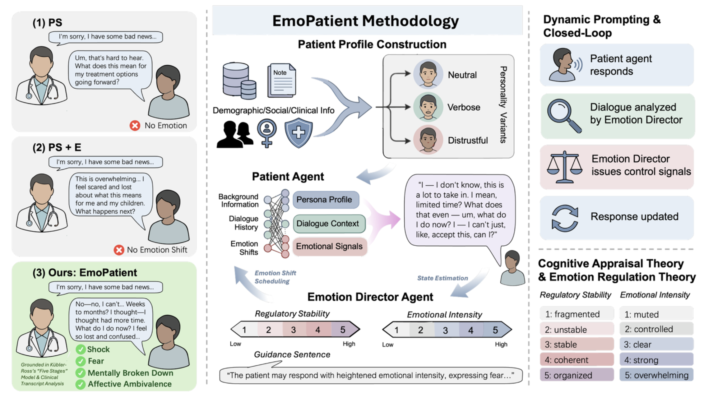
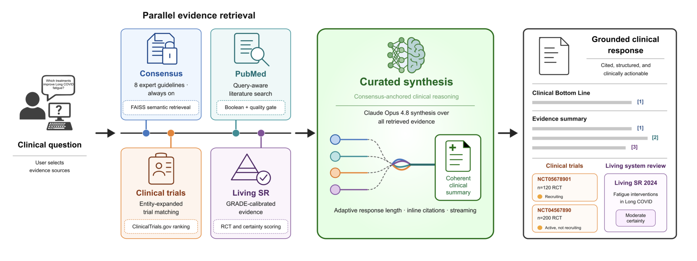
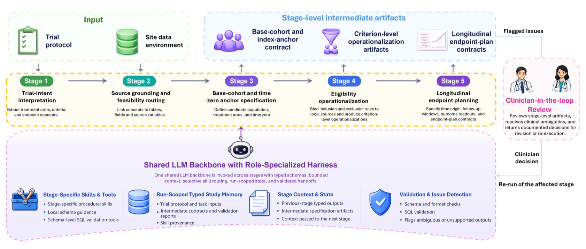

Multimodal Biomedical AI
Modeling longitudinal EHRs, clinical notes, and heterogeneous biomedical data across modalities.
AI for Health Researcher
Hi! My name is Yining Wu (吴忆宁), and I am a master's student at The University of Texas at Austin. I conduct research at the AI Health Lab under the supervision of Prof. Ying Ding, and with Dell Medical School's Department of Internal Medicine under the supervision of Dr. W. Michael Brode. In summer 2026, I was a research intern with Mayo Clinic's Department of Artificial Intelligence and Informatics. My research develops multimodal, efficient, and rigorously evaluated AI systems for complex biomedical data and clinical decision support. I am currently seeking Ph.D. opportunities.
About
I study how foundation models can learn from complex clinical data while remaining efficient, interpretable, and trustworthy.
My work spans longitudinal EHR modeling, clinical NLP, multimodal learning, knowledge distillation, multi-agent systems, and retrieval-augmented generation. I pair model development with careful ablation, error analysis, and clinician-in-the-loop evaluation to understand where medical AI systems succeed and where they fail.
Before joining UT Austin, I earned a Bachelor of Engineering in Vehicle Engineering from Tongji University, bringing a systems-oriented engineering perspective to biomedical AI research.
Modeling longitudinal EHRs, clinical notes, and heterogeneous biomedical data across modalities.
Designing multi-agent systems for clinical reasoning, patient simulation, evidence synthesis, and research automation.
Clinician-centered benchmarks, ablations, error analysis, safety, and reliability.
Selected Research
Current projects across risk prediction, trial emulation, patient simulation, and evidence-grounded clinical support.

Simulation · Palliative Care
An emotion-directed patient simulator using a closed-loop multi-agent architecture to generate dynamic, interpretable responses for realistic communication training.

RAG · Decision Support
A consensus-anchored clinical support system that integrates curated guidance, PubMed literature, clinical trials, and living systematic-review evidence.

Agentic AI · Target Trial Emulation
A contract-governed agent framework that translates target trial protocols into site-specific EHR study definitions through staged procedural skills, typed intermediate artifacts, validation, and clinician-in-the-loop review.
Longitudinal EHR · Risk Modeling
An extractor-scorer pipeline that converts three years of noisy, multimodal EHR timelines into risk-relevant clinical events for five-year cardiovascular risk prediction across 4,534 liver transplant recipients.
Research Output
Yining Wu, Tianshu Du, Jinrui Fang, Chi Zhang, Sonal Admane, Ying Ding
Yining Wu, Philip DiGiacomo, Ying Ding, William Brode
Xu Yang, Zhizhou Sha, Junbo Li, Jian Yu, Yifan Sun, Matthew Zhao, Jinrui Fang, Xinyue Guo, Yining Wu, Xu Hu, Yifu Luo, Qiang Liu, Zhangyang Wang
Experience & Education
May 2026 – Aug 2026
Mayo Clinic · Jacksonville, Florida
Clinical risk modeling and automated EHR-based clinical trial emulation.
Jan 2026 – Present
AI Health Lab, UT Austin
Emotion-directed patient simulation for palliative care communication training.
Oct 2025 – Present
Dell Medical School, UT Austin
Evidence-grounded clinical decision support for Long COVID.
Master of Science
The University of Texas at Austin
GPA 4.0 / 4.0Bachelor of Engineering
Tongji University
GPA 90.5 / 100Programming & Data
Python · SQL · PyTorch · Transformers · scikit-learn · pandas · NumPy · Git · Linux
AI Development
Fine-tuning · LoRA · Knowledge Distillation · Multimodal Learning · Multi-Agent Systems · RAG
Clinical AI
EHR Cohort Extraction · Clinical NLP · Ablation & Error Analysis · Clinician-in-the-Loop Evaluation
Get in touch
I welcome conversations about biomedical AI research, clinical collaborations, and opportunities to build thoughtful, evidence-grounded systems.